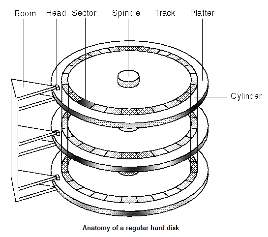

As the name suggests, the motherboard of a computer connects the most imperative parts of a computer on a circuit board.
The attached components include the CPU, RAM, hard drives, disc drives, video cards, and much more!
A simple way to understand what a motherboard does is to imagine it as the the nervous system of the computer's body.
In otherwords, it's the primary communicative pathway of the computer!
It does not tell the computer what to do like a brain would, but relays the message to various parts of the computer.
The original motherboard comprised of simply ports connecting to a keyboard and cassette desk, but could be more specialized via expansions slots.
Over time, this system has grown in complexity by including more components directly and sppeding communication.
Expanded as the "Central Processing Unit", the CPU acts as the brains of a computer.
The CPU, or (micro)processor handles the majority of computations to fetch, decode, execute, and writeback(in otherwords, processing information).
In modern computers, the processor will typically be a chip inserted into a desginated slot on the motherboard.
The processor is a highly condensed and complex piece of circuitry.
Simply put, it functions by first "pulling" information from Random Access Memory (RAM) and other pertinent components.
To process it, the CPU uses assembly language to read interpret the data, which is then sent back to RAM.
As mentioned in the previous section, RAM is an abbreviation for Random Access Memory.
This component is responsible for data storage and is located on the motherboard.
RAM, unlike ROM, handles temporary ("volatile") memory, which is stored while the computer is turned on (ROM, on the other hand, permanently stores data).
Specifics of RAM's functions can be explained in its two main types: DRAM and SRAM.
DRAM, short for Dynamic Random Access Memory, is the most common, but SRAM ("s" standing for static is typically more efficient.
The primary difference between the two types is that the Dynamic needs to be refreshed periodically.
SRAM's data can be held on the computer as long as the power supply runs, creating the faster speed.
Everything that is on your computer is stored in the hard drive. Not only does it store the items the user saves (such as documents, songs, or photos), the hard drve houses the computer's most essential components, like the operating system and programs. Hard drives use its components to enable the computer to read, write, and seek data. This hardware piece is one of the most cruicial- slight damage can jeopordize the whole computer's operation. The technical full term is "hard disk drive", as the its comprised of several disks (called "hard disks") that act as storehouses. Magnetism drives the operation of hard drives. The simple property of magnetism can be used for communication; if a unit is magnetised, then it represents a 1; if not, then it represents a 0. This is how binary code is created, and how data can be transported!
Unlike transit buses that we are used to in urban settings, computer buses is the physical pathway in which hardware components can communicate. Buses mainly consist of curcuits that connect the components to a single pathway. For this reason, buses may be also referred to as a "data highway". Additionally, they are characterized by their size in "bits", or the number of lines which data (bits) is sent over simulaneously.
Outside of the computer tower is the keyboard, mouse, and monitor.
Typically, this is what the layperson will think of when they hear "computer".
User to computer communication is enabled by these- the keyboard and mouse allow the user to command the computer, and the monitor visualizes the functions.
Keyboard: Users will often use keyboards to type and adjust preferences using an array of keys.
Because of its versatility in function, keyboards have become the primary input method for users.
Patterns of buttons allow the user to dictate functions to the computer, telling it to type something, increase volume, or even power down.
Mouse: The mouse is another method for which users may interact with a computer screen.
It is typically a small handheld device that is large enough just to fit under a person's hand.
Mice are also considered to primarily "input" information.
By clicking on certain zones, the computer will interpret/send different commands to the controls (which can be stored in the DRAM).
Monitor: Again, the monitor is an interface that displays the information the CPU processes.
Monitors utilize video cards/adaptors as the leison between the display and the CPU.